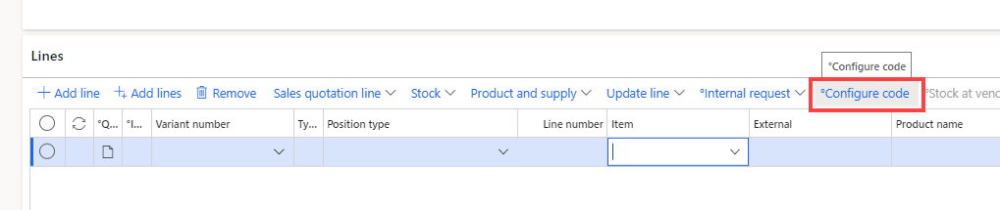
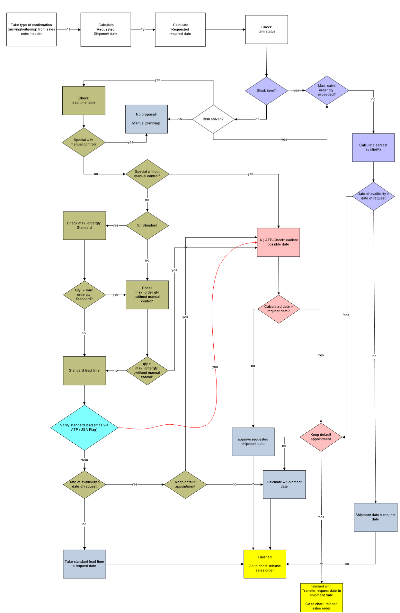
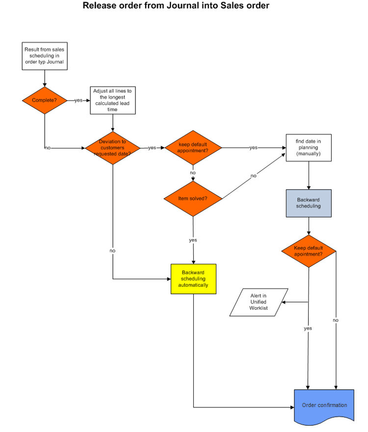

Sales order
Create a Sales Order
- Go to Navigation pane > Modules > Sales and marketing > Sales orders > All sales orders.
- Select New.
Enter sales order header details
- Go to Navigation pane > Modules > Sales and marketing > Sales orders > All sales orders.
- Select New.
- In the Customer account field, select the drop-down button to open the lookup.
- In the list, find and select the customer record.
Note
It is not possible to create a sales order for a stopped customer, that is stopped for ALL. If a customer is stopped, this is shown by the red cross in the column
- Fill in following Fields:
| Field | Description |
|---|---|
| Contact | Choose from the customer master or enter manually |
| Customer´s preferred date | Important in combination with the fields on the right hand. This will be the base for the sales scheduling. |
| Date of order | date from purchase order from the customer |
| Date of order receipt | Date, when the order reached the company |
| Customer requisition | Purchase order from customer |
| Reference | Further reference from customer (e.g. project no) |
- Select OK.
Enter sales order line details
The products sold by your organization may come in variants differentiated by dimensions, such as configuration, color, size, and style. Also, products may be set up to use storage dimensions, such as site, warehouse, and pallet, and tracking dimensions, such as batch and serial numbers. When these dimensions are assigned, you must select the values for those dimensions on the order line. To improve order entry efficiency, you may want to add the respective dimension fields to the order grid.
Under the Sales order lines section, select the Sales order line.
Select Dimensions.
For this example, select the Color, Site and Warehouse dimensions. The dimensions you select here will appear in the sales order grid. If you want your selections to persist, set the Save setup option to Yes.
Select OK.
In the Item number field, select the drop-down button to open the lookup or open the Modelcoding 
- If the item is part of a sales category, the item name will automatically appear in the Sales category field.
- If product dimension fields already contain a value, this is because the value was copied from the product record where it is defined as a default product dimension. You can change the default value at any time.
In the Quantity field, enter a number.
In the Price field, enter a number
Note
If the item number has a Modelcode the price will be calculated automatically according to the Guideline (special net price or discounts). Also misc. charges will be calculated if the Modelcode has a reference to them. Price can be overwritten/entered also manually.
Sales scheduling
As soon as the data in the sales order line and header are completely filled in and all relevant data are checked the sales order scheduling has to run and the order has to be released. This step has to be done in every sales order. Then the references to the sales order will be generated.
Note
Sales scheduling can be accessed only from Sales Order Details (not from Sales Order Overview List Page of all Sales Orders) Open Sales scheduling from Action Pane > Tab Sell > Section Calculate > Sales Scheduling
With the sales order scheduling the leadtime will be calculated. Either on base of the lead time table in the Modelcodeor the ATP check. THe ATP CHeck will be described below.
The date in the field confirmed ship date is base for the production order, picking list or purchase order.
There are a few combination possible:
| Possible Combination | Description |
|---|---|
| Stock item | Green mark, customer´s preferred date can be met according to confirmed ship date => release order |
| Finish good out of lead time | Green mark, customer´s preferred date can be met according to confirmed ship date => release order |
| Finish good within lead time | Red Stop sign, customer´s preferred date can´t be met, according to sales scheduling confirmed ship date will be calculated => if ok, release order. |
| Finish good within lead time not accepted | Red Stop sign, customer´s preferred date can´t be met, according to sales scheduling confirmed ship date will be calculated => if not ok, check keep default appointment, run sales scheduling again and release the order. |
Note
Details see on the Tab Full History, reference will be generated.
If you have checked everything, you can release the Order.
SALES ORDER SCHEDULING

ORDER TYPE SALES ORDER
